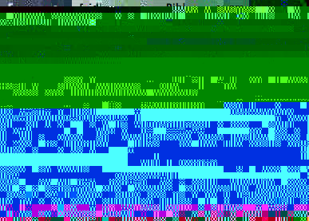

Exporting to html and rss
Export to html
The HTML Export feature uses two template files, one for the entire file, and another for each publication. These files are added to the ~/Library/Application Support/BibDesk/ directory when you first run BibDesk. The files are HTMLExportTemplate and HTMLItemExportTemplate.
Each template file contains macros that the program replaces with the contents of the macro.You probably will not want to add macros to the HTMLExportTemplate file, but in the HTMLItemExportTemplate file, you can use the existing macros as an example for editing. The macros are of the form <$stuff/>, where stuff is a function or data field of the publication class. If you just want to add say, the contents of the "URL" field, then you would add the macro <$pubFields.URL/> - pubFields is a detail of the implementation, and has to be present.
Please share templates you have created! I would like to extend this feature to allow choosing different sets of templates when you want a different look, or perhaps for printing, but I need help creating attractive designs.
Export to rss
See the discussion in Preferences for details on rss.